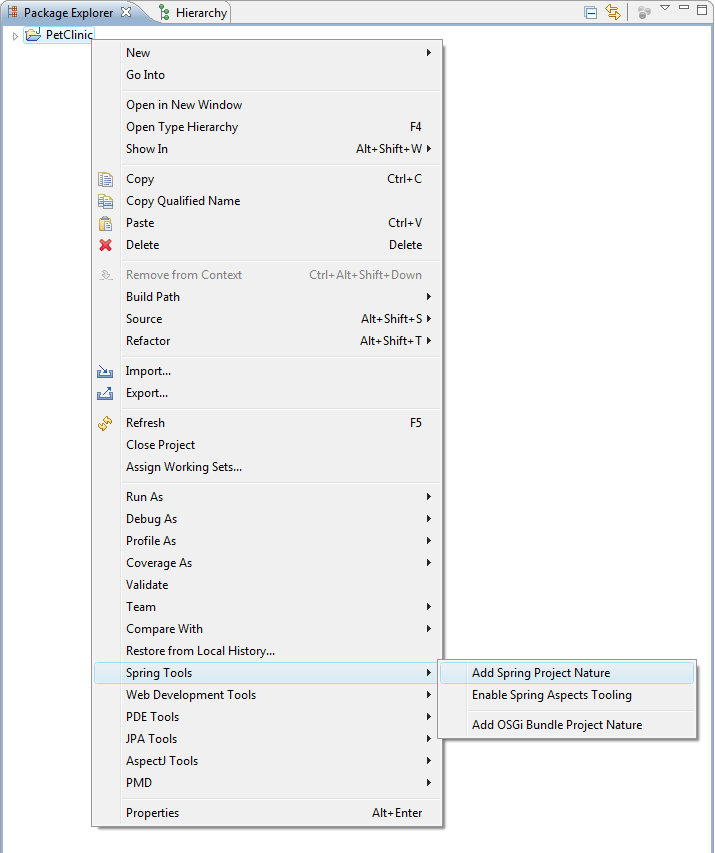

Projects that are created through the Spring Project wizard will automatically have the Spring nature applied to them, but there are times when you are working with a project that does not have the Spring nature. You can add a Spring nature to a project by right clicking it in the Package Explorer and selecting Add Spring Project Nature from the Spring Tools menu.
